kahmeng Making change, big and small, in this ever-growing technical and digital world
Computer Science Student at Universiti Putra Malaysia Sarawak
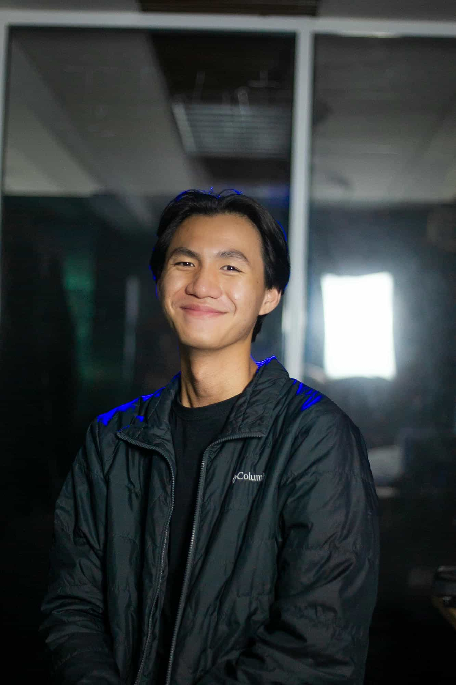
About Me
A leader, photographer, videographer, video editor, graphic designer, event technical crew, and a computer science student. I’ve been involved with various programs since 2019, from internal celebrations to community projects.
I've collaborated with remarkable people, managed multiple projects simultaneously, and demonstrated leadership across diverse teams. Whether it's technical projects or creative endeavors, I bring passion, precision, and dedication to everything I do.
My work spans across various places from designing systems and managing events to creating visual content and leading initiatives. I believe in the power of technology and creativity to make meaningful change.
My Values
- Leadership
- Collaboration
- Teamwork
- Responsibility
- Accountability
My Skillset
A versatile collection of tools and technologies I use to bring ideas to life.
Technical Skills
Creative Skills
Projects & Portfolio
Here are some of the projects I'm proud to have worked on.
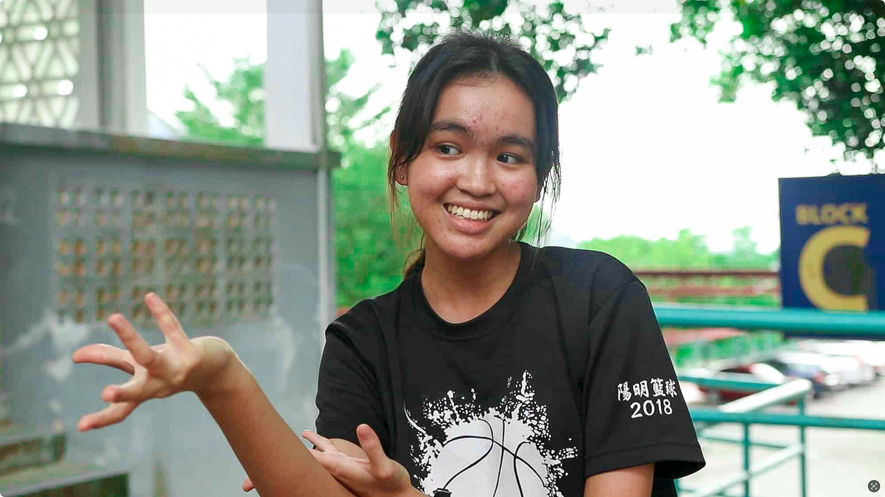
Words from the Graduates Documentary
Produced a heartfelt documentary featuring students reflecting on their secondary school journeys and cherished memories. The goal was to capture the essence of their experiences and the impact of education on personal growth. This project involved conducting interviews and editing footage to craft a compelling narrative that celebrates achievements and milestones. Presented during the REAL Cheras Secondary Graduation Ceremony 2024, the documentary stands as an inspiring tribute to the graduate's dedication and growth.
Produced my myself with the help of Justin Chan, Danielle Ng and Mr. Mackenzie Yap.
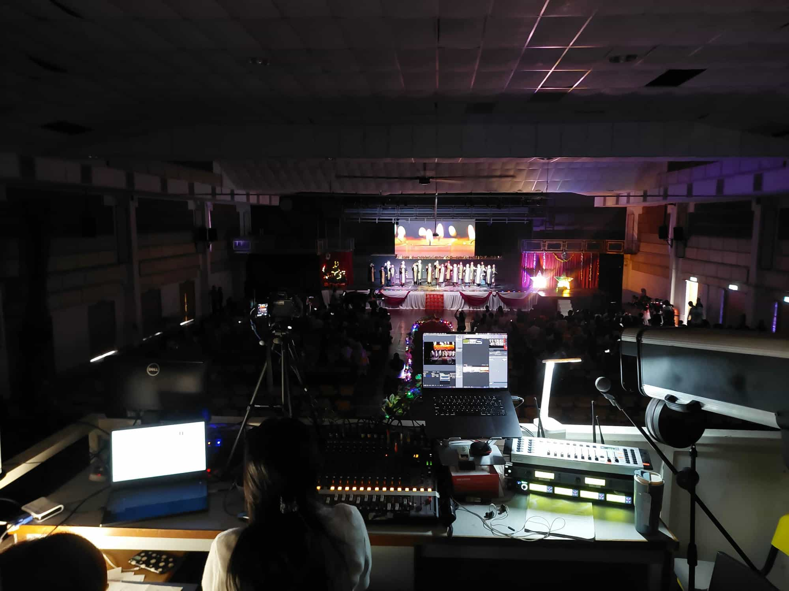
REAL Cheras Primary Graduation and Concert
For this graduation ceremony and concert, I managed all technical aspects, including audio and lighting systems, to ensure a seamless event. Working closely with the program director and teachers, I coordinated equipment setup and troubleshooting, guaranteeing smooth performances and speeches. The event featured multiple microphones and a LED lighting system to create an engaging stage experience.
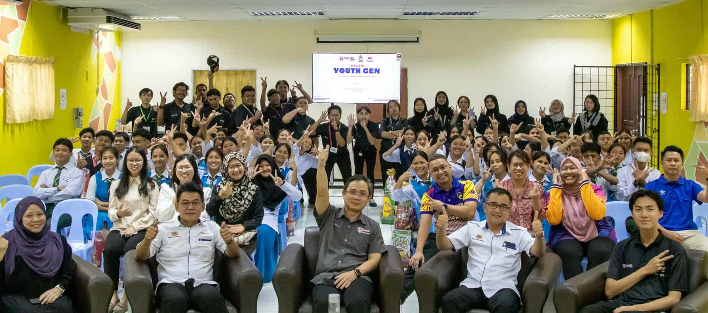
SULAM @ YouthGen Program
SULAM (Service Learning Malaysia-University for Society) is a national initiative to promote volunteerism and community service among university students. Our class focused on youth digital development at SMK Tatau, Bintulu, Sarawak, teaching computer basics, AI tools, graphic design, and teamwork. Over two days, 40 secondary students participated in hands-on activities and learning sessions led by UPMS computer science students.
Organized by the diploma students in computer science with myself as the program director, Nur Syazira as the deputy program director, program advisor Dr. Nurul Nadwa and the entire organising commitee.
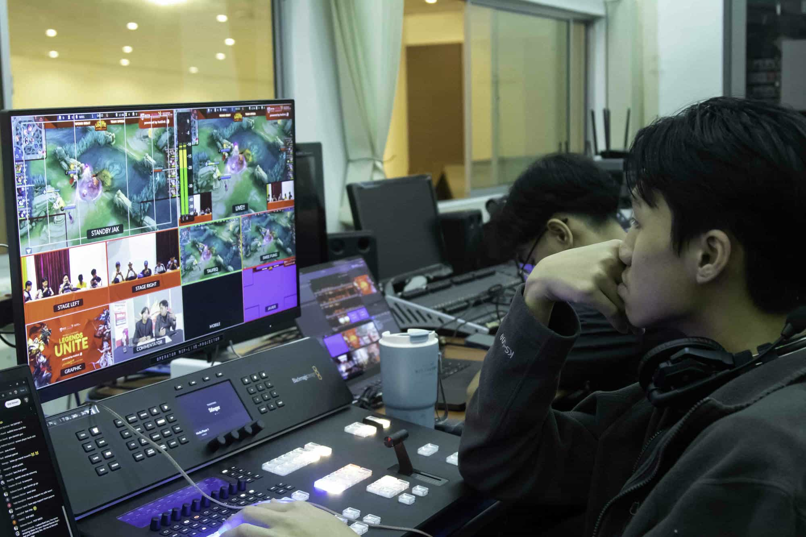
Mobile Legends: Legends Unite
Led the technical broadcast production for this Hotlink sponsored esports competition, overseeing live streaming, camera operations, audio mixing, and visual effects. Directed a team of technical crew, including camera operators, commentators, graphics designers, and game specialists, to deliver a professional viewing experience both in-person and online. Utilized PTZ cameras, a Blackmagic ATEM Television Studio HD8, MIDAS M32 audio mixer, and OBS for seamless live streaming.
Lead by myself and assisted by Taufeq and Javier. Supported by En. Fazdlizan and En. Iqbal from the Infocomm Development Centre (ICT Department) and En. Andison from the Student Management Office.
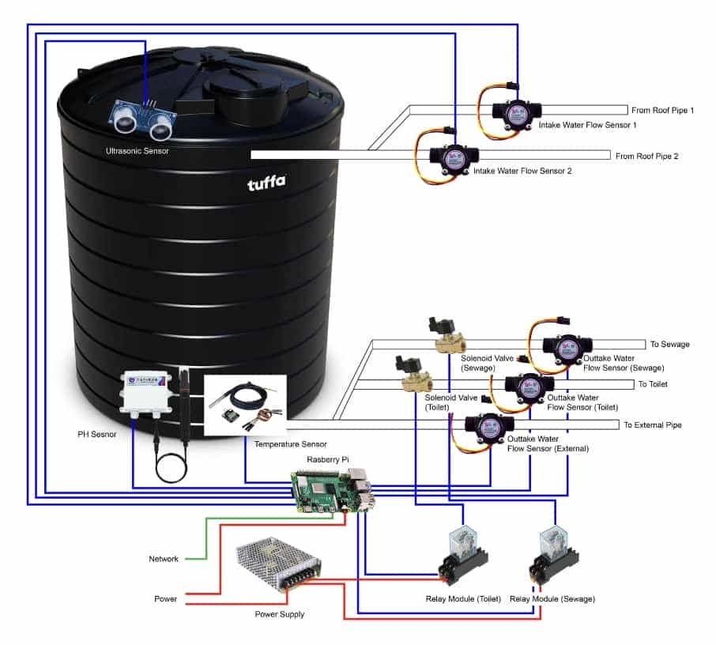
Smart Rainwater Harvesting Tank System (SMARHATS)
SMARHATS is an IoT-based system idea designed to improve water conservation and quality monitoring for Malaysian households. It uses sensors to track water levels, pH, and temperature, automates drainage, and provides real-time alerts via a mobile app. The project, simulated in Packet Tracer, demonstrates efficient, sustainable water management, though challenges include initial costs and technical complexity.
A networking project created by myself, Qaiyyum and Janarrtha Rao
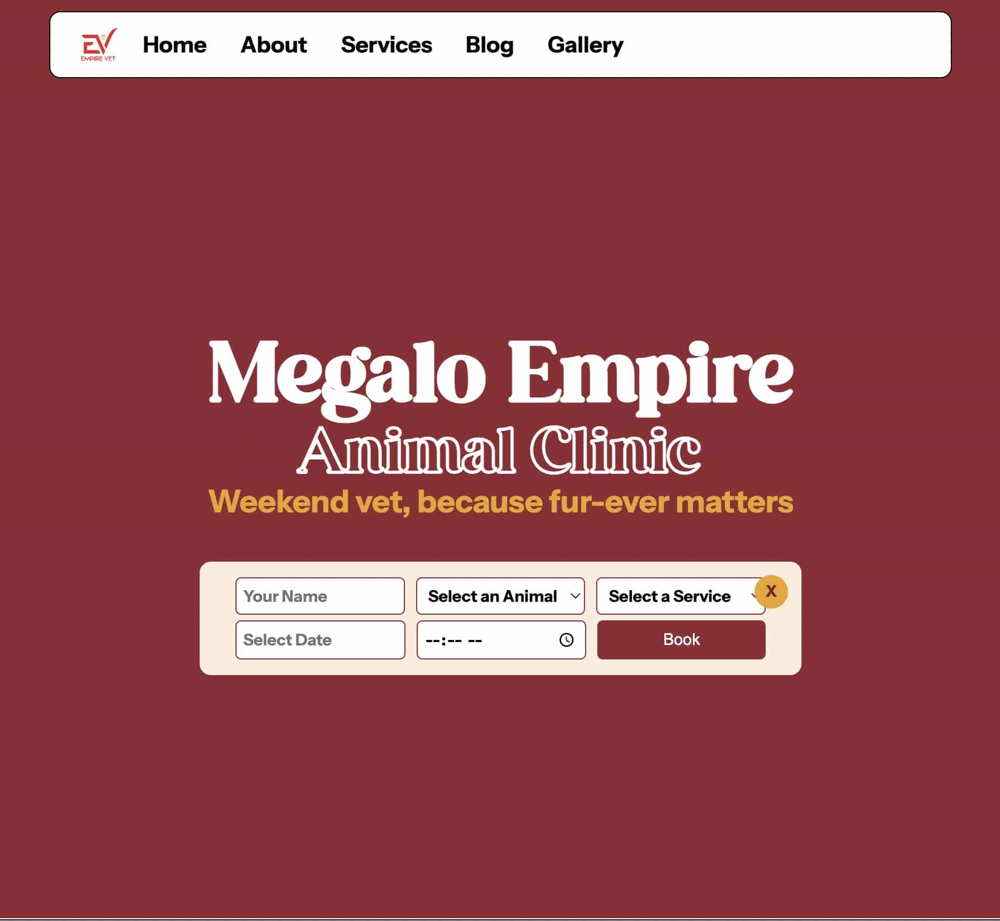
Megalo Empire Animal Clinic Website
This web development project, completed as part of a group coursework, involved collaborating with a local veterinary clinic to create a health-focused website. We gathered client requirements, designed user-friendly UI/UX, implemented responsive and accessible features, and refined the site based on feedback. The project strengthened our technical skills and teamwork through real-world client engagement.
A web project by myself, Qaiyyum, Normaisarah and Rabiatul.
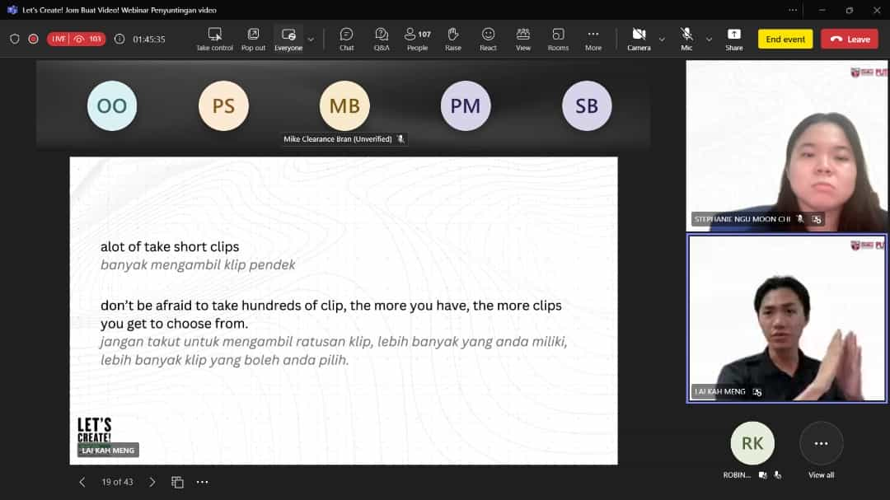
"Let's Create! Jom Buat Video" Video creation basics webinar
Hosted a webinar to teach the fundamentals of video editing, covering essential techniques, tools, and best practices for creating engaging content. Participants learned about video capture, editing workflows, visual storytelling, and practical tips to enhance their projects. Organized by the College Representative Council of Sri Rajang College, the program aimed to equip students with valuable skills beyond the academic curriculum.
This webinar features myself as the main presenter, together with the deputy head of digitalization and corporate communications, Stephanie Ngu, as the co-presenter.
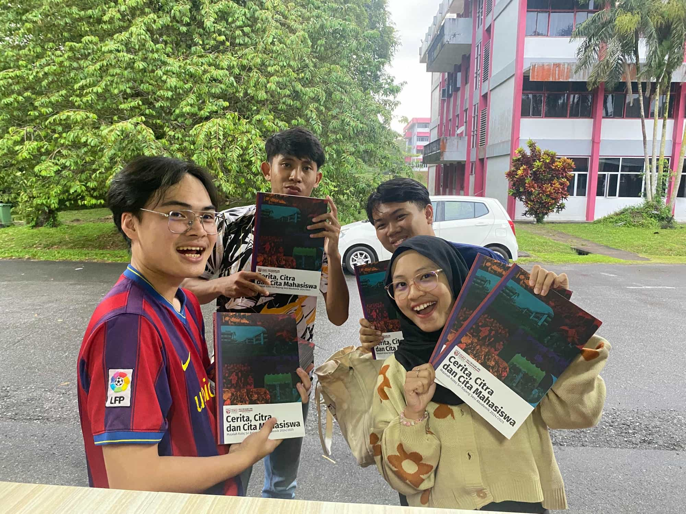
"Cerita, Citra and Cita Mahasiswa" Sri Rajang College Magazine
This first edition of the Sri Rajang College magazine highlights student stories, images, and aspirations. Our editorial team compiled photos and articles from event organizers and writers, ensuring accuracy and quality through multiple review sessions. The magazine, published for the 49th Convocation Ceremony, preserves memories and inspires current and future generations.
The editorial team includes myself as the head editor, followed by the deputy head editor, Stephanie Ngu, proof readers, writers and photographers.
Awards & Recognition
Achievements and recognitions throughout my journey.
Featured Awards
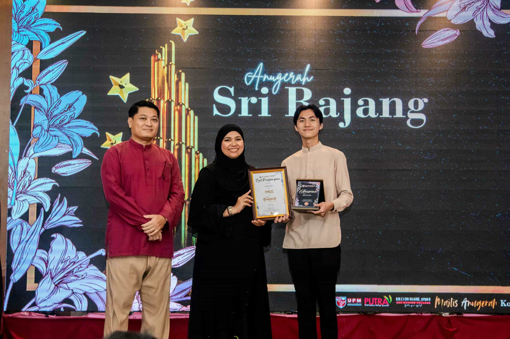
Sri Rajang Award
Sri Rajang College Annual Award Ceremony 2025
Awarded for outstanding leadership and dedication to college activities and programs. Recognizes those who empower others and contribute significantly to the success of the college representative council and event organizing committees.
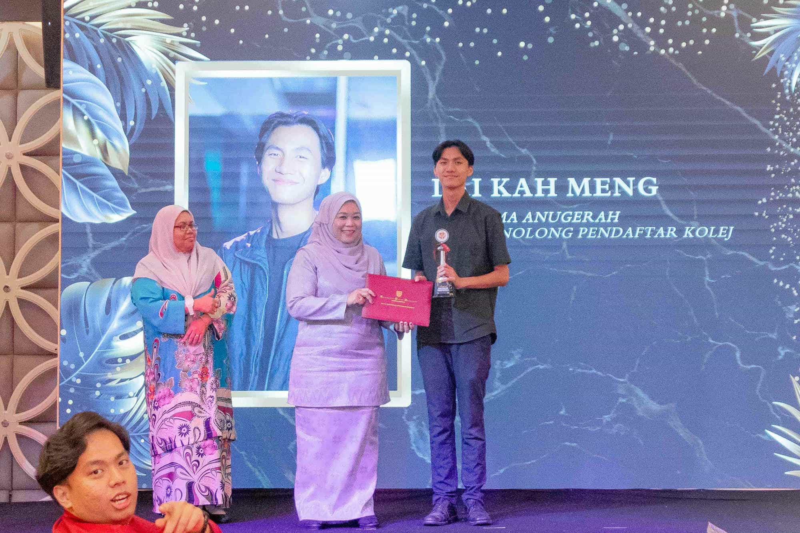
Senior Assistant Registrar Special Award
Sri Rajang College Annual Award Ceremony 2024
Presented by the Senior Assistant Registrar to individuals who demonstrate excellence and commitment in college participation and contributions.
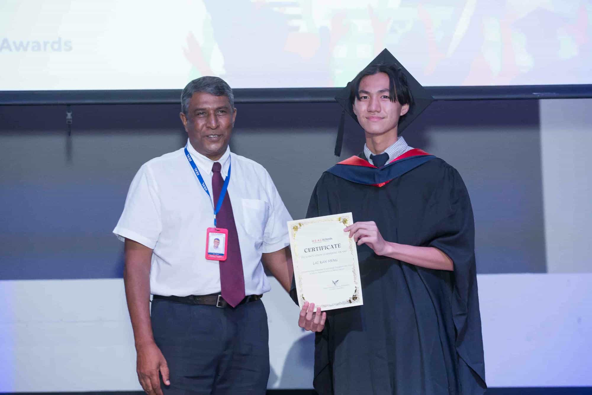
Tech Innovation Leadership Award
REAL Cheras Secondary School Graduation Ceremony 2023
Recognizes outstanding leadership and contributions in technology, including managing technical teams for events and enhancing the school's digital media presence.
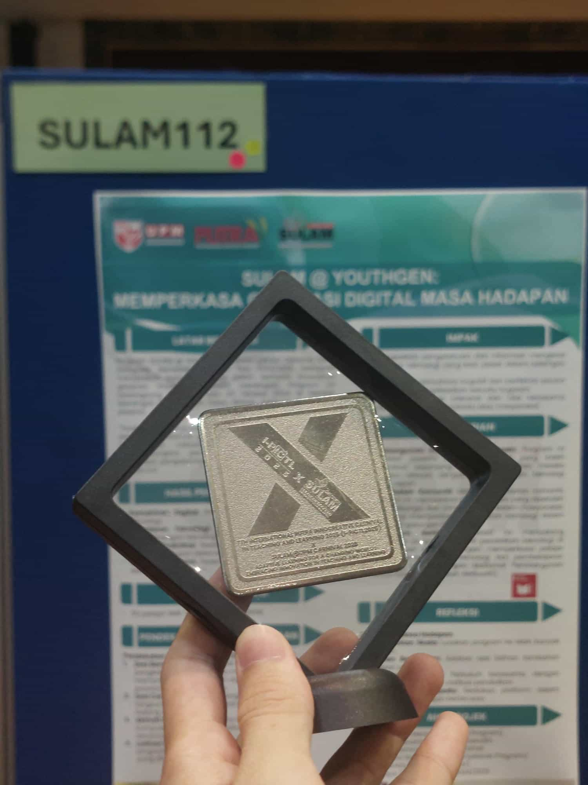
Silver Medal - SULAM@UPM Carnival
Poster/Oral Competition, 7th International Putra InnoCreative Carnival in Teaching and Learning (I-PICTL2025)
Awarded to projects demonstrating exceptional dedication and impact in community service and volunteerism through the SULAM program. Recognizes the "SULAM @ YouthGen" initiative at SMK Tatau, Bintulu, Sarawak, led by UPMS computer science diploma students and supported by the organizing committee and advisors.
Other Recognitions
Leadership & Experience
A timeline of my professional growth, key roles, and accomplishments.
Small actions can also have a big impact
I believe that whatever I do, it's not just about my growth, but also the growth of others. My approach to leadership is rooted in empowering others and fostering a collaborative environment. I strive to turn inconveniences into opportunities, set clear guidelines, and ensure that processes are as efficient as possible. Change doesn't have to be grand or visible, sometimes the smallest overlooked details create the biggest silent impacts. By focusing on thoughtful details and supporting those around me, I aim to create lasting, positive change for both individuals and the community. Every experience, whether big or small, has taught me the value of teamwork, adaptability, and the importance of uplifting others to achieve shared goals.
Career & Education
Committee Positions
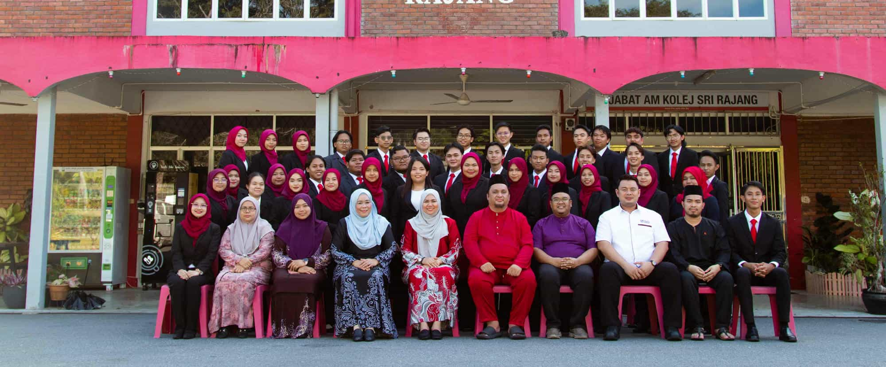
As the Head of Secretariat Affairs, I was responsible for overseeing the planning and execution of a wide range of college events and activities. My role involved coordinating and supporting program directors from the initial concept to the final wrap-up, ensuring that every program ran smoothly and met its objectives. I empower program directors to lead their teams effectively, providing guidance, resources, and encouragement whenever needed.
During my tenure, I noticed a lack of clear guidelines for internal documentation, which often led to confusion and inefficiencies. My first major initiative was to create templates and guideline documents to standardize the design and documentation process. This not only streamlined workflows but also made it easier for students to organize events efficiently and maintain consistency across programs. By improving these processes, I helped foster a culture of organization and accountability within the college community. I also worked closely with other council members to ensure that every event was inclusive, well-documented, and provided opportunities for personal growth and leadership development.
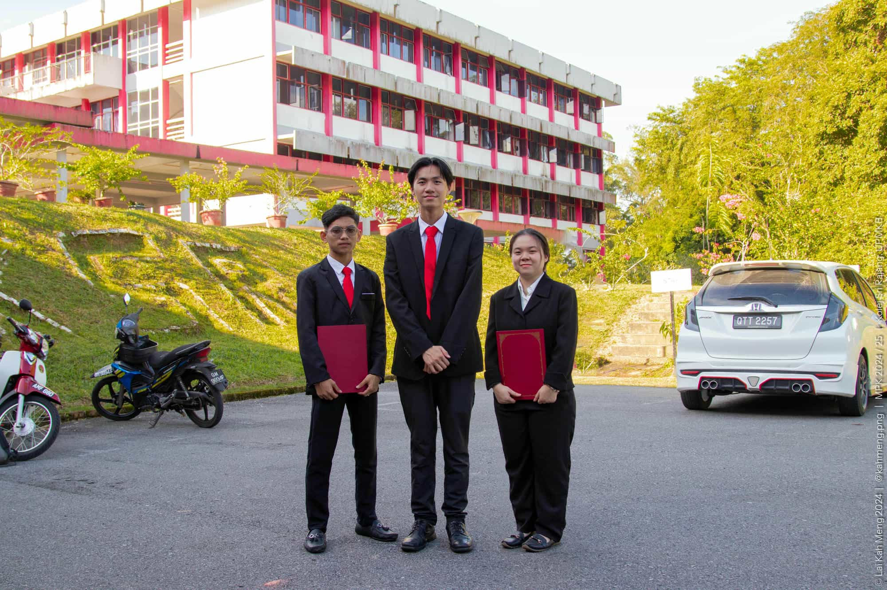
I worked closely with my deputy secretariat members, Stephanie Ngu and Eddy, to manage the college's digital presence and official event organization. Throughout our tenure, we established a stronger digital presence online, enhancing the college's visibility and engagement with students and the wider community. We successfully organized various events that promoted digital multimedia knowledge, providing additional skills and opportunities for students to grow.
One of our proudest achievements was creating the first college magazine, which documented college events and activities for future generations. We also took responsibility for programs with official ceremonies, ensuring that protocols, scripts, seating arrangements, and technical aspects were handled professionally. By focusing on both the creative and logistical sides of event management, we helped elevate the college's reputation and fostered a sense of pride among students and staff. Our work not only improved communication and documentation but also inspired others to take initiative and contribute to the college's ongoing success.
In the Documentation and Data Management Unit, I handled data management and documentation for the student association under Universiti Putra Malaysia Sarawak's Student Representative Council which governed and administered all programs organized by student associations in the university.
As Deputy Head Prefect, I assisted in leading the student prefect board and maintaining school discipline. My responsibilities included supporting the head prefect, organizing meetings, and helping to resolve conflicts among students. By promoting discipline and a positive school environment, I contributed to the overall wellbeing and success of the student body. This experience taught me the importance of responsibility, fairness, and teamwork in leadership roles.
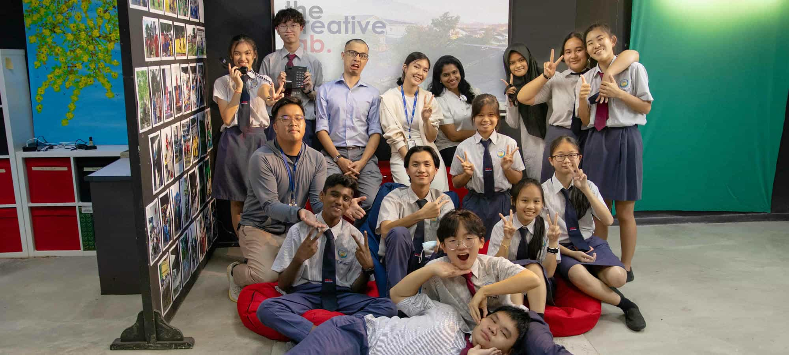
I led a team of photographers responsible for capturing and documenting every school event, resulting in a collection of over 100,000 photos. Our work ensured that each occasion was thoroughly covered and the images were used for marketing, reporting, and preserving memories.
I established a streamlined workflow for organizing, editing, and curating all photos before publication. This approach maintained a high standard of quality and created an accessible, well-structured media archive for the school, making it easy to locate and share the best images.
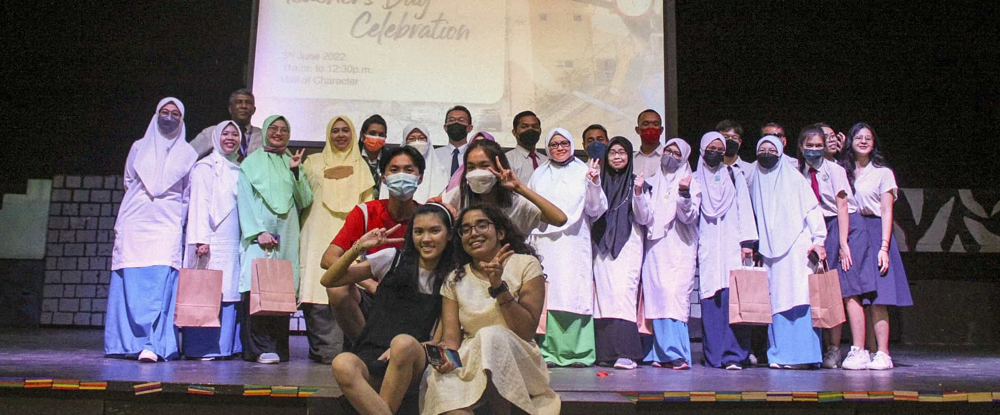
Organized the teacher's day celebration with Nadine, Tasha and Ravinah. Brainstorming and creating plans and activities to reward the teachers. This includes coordinating with the entire school students and staff to ensure the event runs smoothly while everyone has fun and enjoy the celebration.
As a member of the Teachers Day Celebration Main Organising Committee, I worked with Nadine, Tasha, and Ravinah to brainstorm and create plans and activities to reward the teachers. This included coordinating with the entire school students and staff to ensure the event ran smoothly and everyone enjoyed the celebration. Our efforts helped foster appreciation and strengthen the bonds between teachers and students. I learned how meaningful recognition and gratitude can be in building a supportive school culture.
Together with Feon, Ms Ebbie, Ms Emily, and Ms Shi Qi, I organized a virtual fundraising project to help raise funds for families and businesses affected by the COVID-19 pandemic. We created a virtual choir and an esports tournament to attract donations from the public, leveraging digital platforms to reach a wider audience. The funds raised were then distributed to those in need, helping them get through the difficult times during the pandemic. This experience taught me the importance of adaptability, teamwork, and community support in overcoming challenges. It was inspiring to see how collective effort and creativity could make a real difference in people's lives during a crisis.
Featured Photography
A glimpse into my photography work and memorable moments.
Over 100,000 photos captured and countless memories preserved.
I am formerly the Head of Digitalization and Corporate Communication Secretariat in the College Representative Council of Sri Rajang College, Universiti Putra Malaysia Sarawak. I manage all incoming photos from college-organized programs for documentation and publication on the college and university's social media pages, and sometimes in newspapers. A notable program I photographed was UPM's 48th Convocation, Session 1. Alongside that, I have documented many events within the college, university, and community programs such as longhouse visits.
I was also the Head of the Media Club at REAL Cheras during my secondary education. I managed thousands of photos taken by my team of photographers, ensuring every event was properly documented and shared for marketing, reporting, and memory keeping purposes.
I ensured all photos were properly organized, edited, and filtered before being published. This process helped keep an easy-to-navigate internal directory for school media while ensuring the best quality images were shared.
Featured Videos
Explore my videography and video editing work.
Capturing moments and creating videos with meaning, memories, and impact
I have edited and produced over 100 videos for various projects, ranging from promotional content to social media campaigns for college initiatives. Each project is an opportunity to refine my storytelling through motion, blending technical editing skills with creative vision to deliver impactful visual narratives.
I take pride in projects that preserve important moments and celebrate meaningful occasions. One of my most cherished projects was creating a Teacher's Day celebration video in 2021, captured during the challenging lockdown period. It brought together messages and memories from students and teachers, serving as a digital gathering that celebrated the bonds built despite physical distance.
Another significant project was producing an unscripted graduation video that authentically captured the emotions, reflections, and aspirations of graduates. Working without a script meant embracing spontaneity and genuine moments, resulting in a deeply personal tribute to their journey and the beginning of their next chapter.
Get In Touch
Have a project in mind, want to collaborate, or just say hi? Drop me a line!